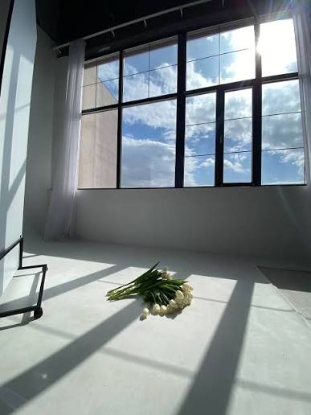
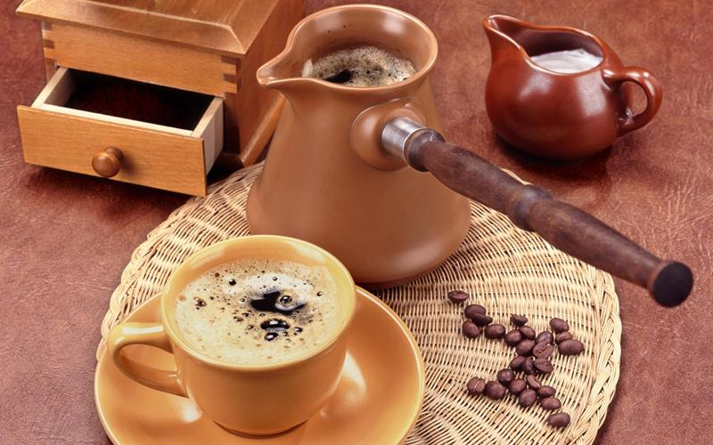
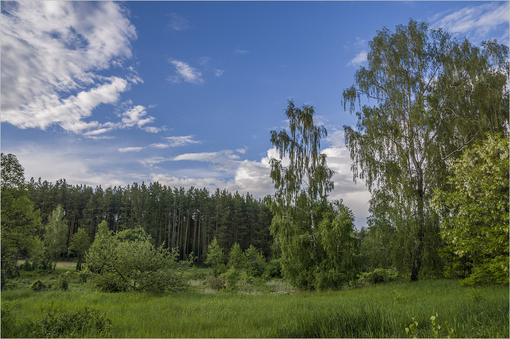

Студійний портрет «Warm Tones»

Мінімалістична студійна фотозйомка з фокусом на природність, спокійні емоції та теплу гаму кольорів.
Вітаю! Я фотограф та графічний дизайнер. Створюю візуальний контент, атмосферні портретні зйомки та розробляю сучасні дизайн-концепти.

Мінімалістична студійна фотозйомка з фокусом на природність, спокійні емоції та теплу гаму кольорів.

Створення логотипа, кольорової палітри та друкованої продукції в мінімалістичному стилі.

Дослідження природних ландшафтів та глибини кольорів української природи.